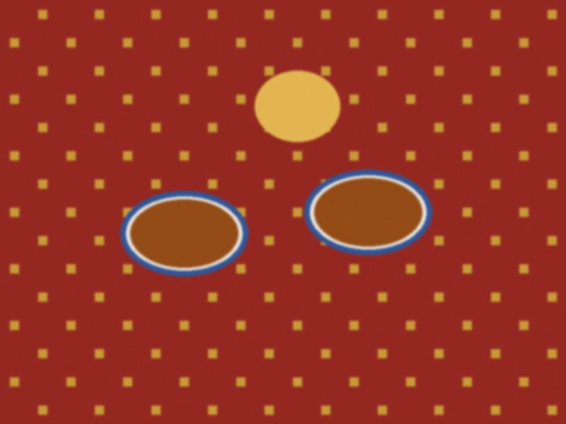

Honey cake for 8 March, finally
I know, 8 March was two weeks ago. I made Gulmira apa's honey cake only now because on the 8th Aruuke had a fever and…
♥ 38 · 2 comments

First post, with a kettle
The kettle that started this. Dastan brought it from the bazaar in Talas. My sister Gulnara in Talas says everybody…
♥ 60 · 0 comments